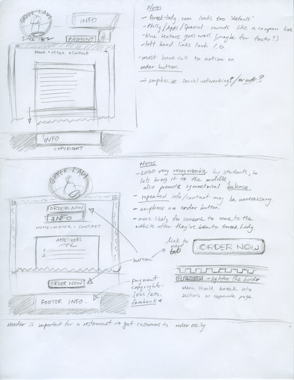
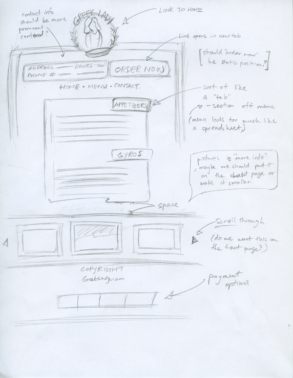
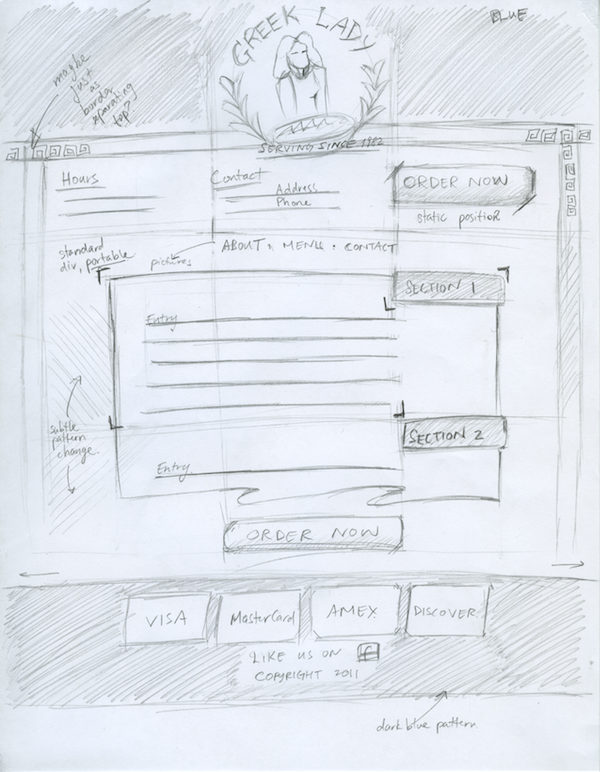
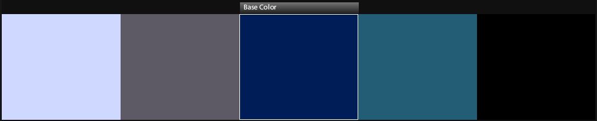
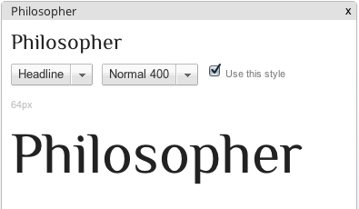
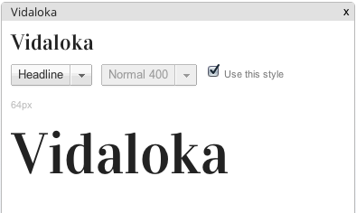
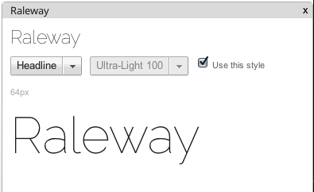
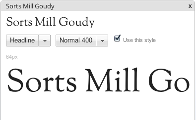

|

|
Notes:
- greek-lady.com looks too default
- philly/apps/special sounds like a coupon link
- blue texture goes well, maybe for footer?
- left hand links look very web 1.0
- must have call to action on order butotn
- should we emphasize social networking or not?
Notes:
- Logo is very recognizeable by students, so lets bring it to the middle.
- middle logo promotes symmetrical balance
- repeated info/contact may be unnecessary, but could also be more effective
- emphasis on order button!! more emphasis!!
- more likely for someone to come to the website after they have been to the restaurant
- menu should break into sections on separate page
|
|

|
Notes:
- order now should open in new tab
- contact info should be more prominent
- tabs in menu sections off parts of the menu so it doesn't look so much like a spreadsheet. more like a menu
- pictures are more info, maybe we should put it on the about page instead. Or, we could simply make the section smaller.
- payment options and copyright in the footer
- should order now button be a static position, so customers can always click on it?
References:
Greek Lady Logo
Edge Pattern
More Edge patterns
Continuous Pattern
Order Now Button style
Button styles palette
Facebook button
|
|

|
Color Palette

Typography
Google Web Fonts




|
{kind=link}
{kind=link}
{kind=link}
{kind=link}
{kind=link}
{kind=link}
{kind=link}